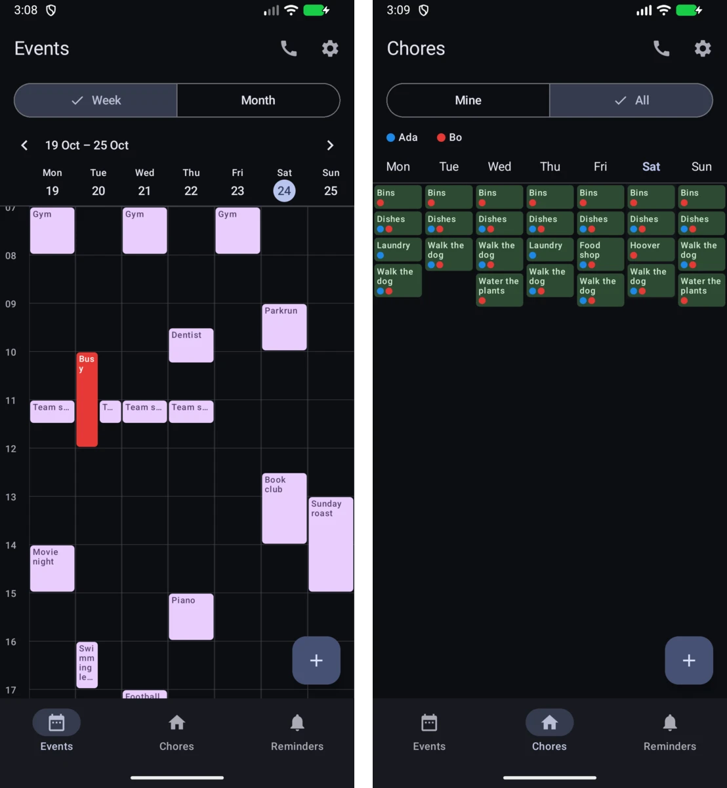

Soulmanyes
GitHub
Soulmanyes
GitHub
Soulmanyes
GitHub
Soulmanyes
GitHub
Pick the one you want to download. The Linux apps install with the command shown: paste it into a terminal.

Download for Android
curl -fsSL https://raw.githubusercontent.com/Soulmanyes/gesture-cam/main/install.sh | shMore about Gesture Cam
 Download for Windows or Linux
Download for Windows or Linux
cl_yawspeed with one key, and see which one is active from a sound and your crosshair colour.
Made for surf, with an optional strafe trainer. Linux, Steam's native game

curl -fsSL https://raw.githubusercontent.com/Soulmanyes/sourceyaw/main/install.sh | shView on GitHub

curl -fsSL https://raw.githubusercontent.com/Soulmanyes/hypr-dashboard/main/install.sh | bashView on GitHub

curl -fsSL https://raw.githubusercontent.com/Soulmanyes/kitty-styler/main/install.sh | shView on GitHub